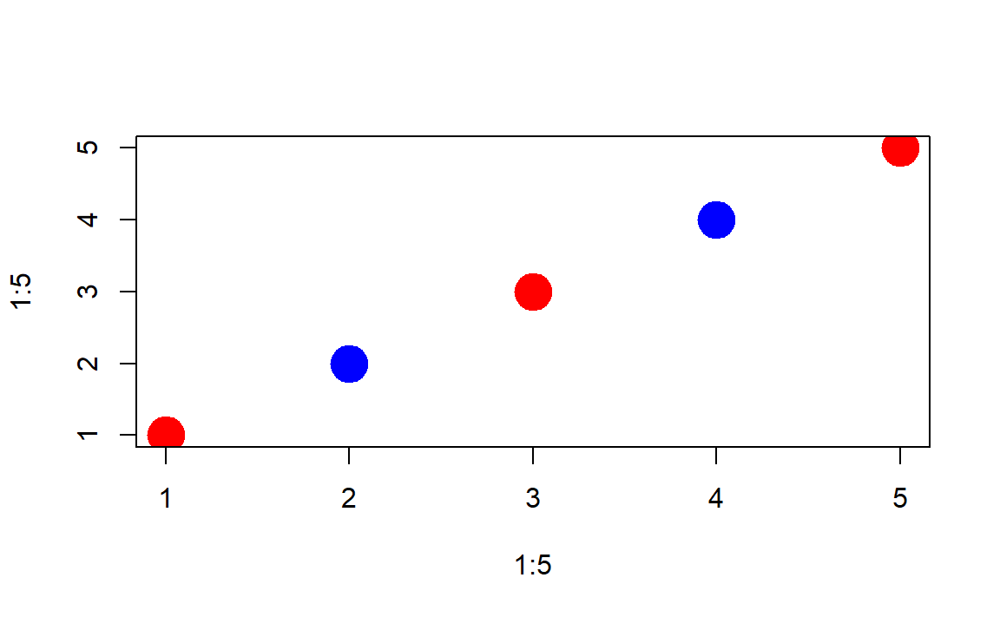

Chapter 3 Operators
Logical operators are the most basic type of data programming and the core of many types of data analysis. Most of the time we are not conducting fancy statistics, we just want to identify members of a group (print all of the females from the study), or describe things that belong to a subset of the data (compare the average price of houses with garages to houses without garages).
In order to accomplish these simple tasks we need to use logic statements. A logic statement answers the question, does an observation belong to a group.
Many times groups are simple. Show me all of the professions that make over $100k a year, for example.
Sometimes groups are complex. Identify the African American children from a specific zip code in Chicago that live in households with single mothers.
You will use nine basic logical operators:
| Operator | Description |
|---|---|
| < | less than |
| <= | less than or equal to |
| > | greater than |
| >= | greater than or equal to |
| == | exactly equal to |
| != | not equal to |
| x | y | x OR y |
| x & y | x AND y |
| ! | opposite of |
Logical operators create logical vectors, a vector that contains only TRUE or FALSE. The TRUE means that the observation belongs to the group, FALSE means it does not.
x1 <- c(7,9,1,2)
x2 <- c("male","male","female","female")
x3 <- c("treatment","control","treatment","control")
x1 > 7
#> [1] FALSE TRUE FALSE FALSE
x1 >= 7
#> [1] TRUE TRUE FALSE FALSE
x1 == 9
#> [1] FALSE TRUE FALSE FALSE
x1 = 9 # don't use a single equals operator! it overwrites your variable
x1
#> [1] 9
x1 <- c(7,9,1,2)
x1 == 9 | x1 == 1
#> [1] FALSE TRUE TRUE FALSE
# x2 == male # this will not work because male is not enclosed with quotes
x2 == "female"
#> [1] FALSE FALSE TRUE TRUE
x2 == "female" & x3 == "treatment"
#> [1] FALSE FALSE TRUE FALSENote that we use operators to create logical vectors where TRUE designates observation that belong to the defined group, and FALSE designates observations outside the group. We use these logical vectors in three ways:
- We can create a selector variable that is used for subsets. When a logical vector is passed to the subset function it will keep all observations with a TRUE value, and drop observations with a FALSE value.
x1
#> [1] 7 9 1 2
x1 > 5
#> [1] TRUE TRUE FALSE FALSE
keep.these <- x1 > 5
x1[ keep.these ]
#> [1] 7 9
# you can create a selector variable with one variable, and apply it to another
x2[ keep.these ] # sex of observations where x1 > 5
#> [1] "male" "male"- Logical vectors give us an easy way to count things within defined groups.
We can apply a sum() function to a logical vector, and the result will be a tally of all of the TRUE cases.
# how many females do we have in our study?
sum( x2 == "female" )
#> [1] 2
# how many females do we have in our treatment group?
sum( x2 == "female" & x3 == "treatment" )
#> [1] 1- We use selector variables to replace observations with new values using the assignment operator. This is similar to a find and replace operation.
x7 <- c( "mole","mouse","shrew","mouse","rat","shrew")
# the lab assistant incorrectly identified the shrews
x7
#> [1] "mole" "mouse" "shrew" "mouse" "rat" "shrew"
x7[ x7 == "shrew" ] <- "possum"
x7
#> [1] "mole" "mouse" "possum" "mouse" "rat" "possum"
# we don't know if linda received the treatment
x3 <- c("adam","jamal","linda","sriti")
x4 <- c( "treatment","control","treatment","control")
x4[ x3 == "linda" ] <- NA
x4
#> [1] "treatment" "control" NA "control"The ! operator is a special case, where it is not used to define a new logical vector, but rather it swaps the values of an existing logical vector.
x1
#> [1] 7 9 1 2
these <- x1 > 5
these
#> [1] TRUE TRUE FALSE FALSE
! these
#> [1] FALSE FALSE TRUE TRUE
! TRUE
#> [1] FALSE
! FALSE
#> [1] TRUE3.1 Datasets
When we combine multiple vectors together, we now have a dataset. There are three main types that we will use in this class.
| Class | Description |
|---|---|
| data frame | A typical data set comprised of several variables |
| matrix | A data set comprised of only numbers, used for matrix math |
| list | The grab bag of data structures - several vectors held together |
3.1.1 Data Frames
The most familiar spreadsheet-type data structure is called a data frame in R. It consists of rows, which represent observations, and columns, which represent variables.
data( USArrests )
dim( USArrests ) # number of rows by number of columns
#> [1] 50 4
names( USArrests ) # variable names or column names
#> [1] "Murder" "Assault" "UrbanPop" "Rape"
row.names( USArrests )
#> [1] "Alabama" "Alaska" "Arizona" "Arkansas"
#> [5] "California" "Colorado" "Connecticut" "Delaware"
#> [9] "Florida" "Georgia" "Hawaii" "Idaho"
#> [13] "Illinois" "Indiana" "Iowa" "Kansas"
#> [17] "Kentucky" "Louisiana" "Maine" "Maryland"
#> [21] "Massachusetts" "Michigan" "Minnesota" "Mississippi"
#> [25] "Missouri" "Montana" "Nebraska" "Nevada"
#> [29] "New Hampshire" "New Jersey" "New Mexico" "New York"
#> [33] "North Carolina" "North Dakota" "Ohio" "Oklahoma"
#> [37] "Oregon" "Pennsylvania" "Rhode Island" "South Carolina"
#> [41] "South Dakota" "Tennessee" "Texas" "Utah"
#> [45] "Vermont" "Virginia" "Washington" "West Virginia"
#> [49] "Wisconsin" "Wyoming"
head( USArrests ) # print first six rows of the data
#> Murder Assault UrbanPop Rape
#> Alabama 13.2 236 58 21.2
#> Alaska 10.0 263 48 44.5
#> Arizona 8.1 294 80 31.0
#> Arkansas 8.8 190 50 19.5
#> California 9.0 276 91 40.6
#> Colorado 7.9 204 78 38.73.1.2 Matrices
A matrix is also a rectangular data object that consists of collections of vectors, but it is special in the sense that it only has numeric vectors and no variable names.
mat <- matrix( 1:20, nrow=5 )
mat
#> [,1] [,2] [,3] [,4]
#> [1,] 1 6 11 16
#> [2,] 2 7 12 17
#> [3,] 3 8 13 18
#> [4,] 4 9 14 19
#> [5,] 5 10 15 20
names( mat )
#> NULL
dim( mat )
#> [1] 5 4
as.data.frame( mat ) # creates variable names
#> V1 V2 V3 V4
#> 1 1 6 11 16
#> 2 2 7 12 17
#> 3 3 8 13 18
#> 4 4 9 14 19
#> 5 5 10 15 20These are used almost exclusively for matrix algebra operations, which are fundamental to mathematical statistics. We will not use matrices in this course.
3.1.3 Lists
The list is the most flexible data structure. It is created by sticking a bunch of unrelated vectors or datasets together. For example, when you run a regression you generate a bunch of interesting information. This information is saved as a list.
x <- 1:100
y <- 2*x + rnorm( 100, 0, 10)
m.01 <- lm( y ~ x )
names( m.01 )
#> [1] "coefficients" "residuals" "effects" "rank"
#> [5] "fitted.values" "assign" "qr" "df.residual"
#> [9] "xlevels" "call" "terms" "model"
m.01$coefficients
#> (Intercept) x
#> 1.937773 1.967829
m.01$residuals
#> 1 2 3 4 5
#> -3.32624659 -4.26993151 3.94723786 -4.38673548 4.39025298
#> 6 7 8 9 10
#> 10.78851222 -2.92382113 -10.33417022 -3.68479590 -0.92645854
#> 11 12 13 14 15
#> 7.99065717 11.81920770 13.89950917 -20.85387992 -14.07278078
#> 16 17 18 19 20
#> -7.47178718 8.19228260 10.79007939 19.24931842 -2.22019795
#> 21 22 23 24 25
#> -14.06851755 -17.52937857 11.90462585 2.55792227 -3.23311341
#> 26 27 28 29 30
#> -10.93639444 -12.21493400 3.90430680 8.03016308 3.35117463
#> 31 32 33 34 35
#> 8.43937367 5.86751597 -8.65846780 -6.33127530 -0.77414257
#> 36 37 38 39 40
#> 12.59616391 -6.36991914 6.73458172 2.40175121 -4.08102106
#> 41 42 43 44 45
#> 16.72942570 -4.94229932 -2.78266362 9.47348078 -15.13323309
#> 46 47 48 49 50
#> -16.96493154 5.34541943 2.93456049 3.81652838 0.26932558
#> 51 52 53 54 55
#> -3.71958696 -8.08763393 -12.72340244 8.27982707 -12.22895432
#> 56 57 58 59 60
#> 0.53272892 0.50967596 -3.04176536 13.35899674 -7.98409949
#> 61 62 63 64 65
#> -12.00801424 -9.19451194 3.66820814 -3.13298211 2.03077610
#> 66 67 68 69 70
#> 2.70661546 -5.33416408 9.91642209 8.90927937 12.52383708
#> 71 72 73 74 75
#> 22.94437337 17.53486005 -0.93944708 -15.04130806 7.72075044
#> 76 77 78 79 80
#> -10.10107154 0.82038259 1.61422605 5.46957962 8.12359934
#> 81 82 83 84 85
#> 1.95817862 0.95309260 -0.08883241 6.44239118 -1.57854693
#> 86 87 88 89 90
#> 6.95846790 23.67767162 5.81232148 -9.05385141 -7.90242325
#> 91 92 93 94 95
#> -4.43828300 6.62558022 3.88194220 -2.34736711 -6.27696621
#> 96 97 98 99 100
#> -15.95553411 -13.40072724 6.16552110 -16.57342286 -4.91868960
m.01$call
#> lm(formula = y ~ x)These output are all related to the model we have run, so they are kept organized by the list so they can be used for various further steps like comparing models or checking for model fit.
A data frame is a bit more rigid that a list in that you cannot combine elements that do not have the same dimsions.
3.2 Subsets
The subset operators [ ] are one of the most common you will use in R.
The primary rule of subsets is to use a data operator to create a logical selector vector, and use that to generate subsets. Any observation that corresponds to TRUE will be retained, any observation that corresponds to FALSE will be dropped.
For vectors, you need to specify a single dimension.
x1 <- c(167,185,119,142)
x2 <- c("adam","jamal","linda","sriti")
x3 <- factor( c("male","male","female","female") )
x4 <- c( "treatment","control","treatment","control" )
dat <- data.frame( name=x2, sex=x3, treat=x4, strength=x1 )
these <- x1 > 140 # selector vector
these
#> [1] TRUE TRUE FALSE TRUE
x1[ these ]
#> [1] 167 185 142
x2[ these ]
#> [1] "adam" "jamal" "sriti"For data frames, you need two dimensions (rows and columns). The two dimensions are seperated by a comma, and if you leave one blank you will not drop anything.
# dat[ row position , column position ]
dat
#> name sex treat strength
#> 1 adam male treatment 167
#> 2 jamal male control 185
#> 3 linda female treatment 119
#> 4 sriti female control 142
these <- dat$treat == "treatment"
dat[ these , ] # all data in the treatment group
#> name sex treat strength
#> 1 adam male treatment 167
#> 3 linda female treatment 119
dat[ , c("name","sex") ] # select two columns of data
#> name sex
#> 1 adam male
#> 2 jamal male
#> 3 linda female
#> 4 sriti female
# to keep a subset as a separate dataset
dat.women <- dat[ dat$sex == "female" , ]
dat.women
#> name sex treat strength
#> 3 linda female treatment 119
#> 4 sriti female control 142Note the rules listed above about subsetting factors. After applying a subset, they will retain all of the original levels, even when they are not longer useful. You need to drop the unused levels if you would like them to be omitted from functions that use the factor levels for analysis.
df <- data.frame( letters=LETTERS[1:5], numbers=seq(1:5) )
levels( df$letters )
#> [1] "A" "B" "C" "D" "E"
sub.df <- df[ 1:3, ]
sub.df$letters
#> [1] A B C
#> Levels: A B C D E
levels( sub.df$letters )
#> [1] "A" "B" "C" "D" "E"
droplevels( sub.df$letters )
#> [1] A B C
#> Levels: A B C
sub.df$letters <- droplevels( sub.df$letters )3.3 Variable Transformations
When we create a new variable from existing variables, it is called a ‘transformation’. This is very common in data science. Crime is measures by the number of assults per 100,000 people, for example (crime / pop). A batting average is the number of hits divided by the number of at bats.
In R, mathematical operations are vectorized, which means that operations are performed on the entire vector all at once. This makes transformations fast and easy.
R uses a convention called “recycling”, which means that it will re-use elements of a vector if necessary. In the example below the x vector has 10 elements, but the y vector only has 5 elements. When we run out of y, we just start over from the beginning. This is powerful in some instances, but can be dangerous in others if you don’t realize that that it is happening.
x <- 1:10
y <- 1:5
x + y
#> [1] 2 4 6 8 10 7 9 11 13 15
x * y
#> [1] 1 4 9 16 25 6 14 24 36 50
# the colors are recycled
plot( 1:5, 1:5, col=c("red","blue"), pch=19, cex=3 )
Here is an example of recycling gone wrong:
x1 <- c(167,185,119,142)
x2 <- c("adam","jamal","linda","sriti")
x3 <- c("male","male","female","female")
x4 <- c( "treatment","contro","treatment","control" )
dat <- data.frame( name=x2, sex=x3, treat=x4, strength=x1 )
# create a subset of data of all female study participants
dat$sex == "female"
#> [1] FALSE FALSE TRUE TRUE
these <- dat$sex == "female"
dat[ these, ] # correct subset
#> name sex treat strength
#> 3 linda female treatment 119
#> 4 sriti female control 142
# same thing, but i mess is up - the female element is recycled in the overwrite
dat$sex = "female" # whoops just over-wrote my data! should be double equal
these <- dat$sex == "female"
dat[ these , ]
#> name sex treat strength
#> 1 adam female treatment 167
#> 2 jamal female contro 185
#> 3 linda female treatment 119
#> 4 sriti female control 1423.4 Missing Values: NA’s
Missing values are coded differently in each data analysis program. SPSS uses a period, for example. In R, missing values are coded as “NA”.
The important thing to note is that R wants to make sure you know there are missing values if you are conducting analysis. As a result, it will give you the answer of “NA” when you try to do math with a vector that includes a missing value. You have to ask it explicitly to ignore the missing value.
x5 <- c( 1, 2, 3, 4 )
x5
#> [1] 1 2 3 4
sum( x5 )
#> [1] 10
mean( x5 )
#> [1] 2.5
x5 <- c( 1, 2, NA, 4 )
x5
#> [1] 1 2 NA 4
# should missing values be treated as zeros or dropped?
sum( x5 )
#> [1] NA
mean( x5 )
#> [1] NA
sum( x5, na.rm=T ) # na.rm=T argument drops missing values
#> [1] 7
mean( x5, na.rm=T ) # na.rm=T argument drops missing values
#> [1] 2.333333You cannot use the == operator to identify missing values in a dataset. There is a special is.na() function to locate all of the missing values in a vector.
x5
#> [1] 1 2 NA 4
x5 == NA # this does not do what you want
#> [1] NA NA NA NA
is.na( x5 ) # much better
#> [1] FALSE FALSE TRUE FALSE
! is.na( x5 ) # if you want to create a selector vector to drop missing values
#> [1] TRUE TRUE FALSE TRUE
x5[ ! is.na(x5) ]
#> [1] 1 2 4
x5[ is.na(x5) ] <- 0 # replace missing values with zero3.5 The ‘attach’ Function
Never Use This!
This is a convenient function for making variable names easily accessible, but it is problematic because of:
scope
conflicting variable names
x <- 1:5
y <- 6:10
dat <- data.frame(x,y)
rm(x)
rm(y)
# I want to transform x in my dataset
attach( dat )
2*x
#> [1] 2 4 6 8 10
x <- 2*x
detach( dat )
x
#> [1] 2 4 6 8 10
dat # whoops! I didn't save my work in the dataset
#> x y
#> 1 1 6
#> 2 2 7
#> 3 3 8
#> 4 4 9
#> 5 5 10You will see the attach() function used on occassion, and it is tempting because you can write the variable names directly. But in general, try to avoid the attach() function and don’t form bad habits by using it now because when your scripts become more complicated then can cause problmes.